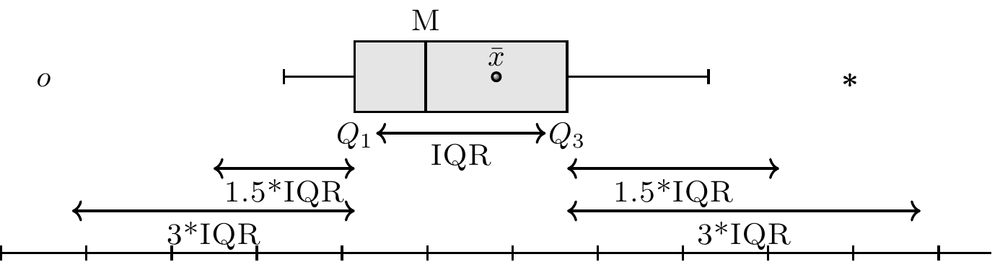

5.3 Approssimazione quadratica
L’approssimazione quadratica è un metodo analitico approssimato che può essere usato per superare il problema della “maledizione della dimensionalità”. La motivazione di tale metodo è la seguente. Sappiamo che, in generale, la regione della distribuzione a posteriori che si trova in prossimità del suo massimo può essere ben approssimata dalla forma di una distribuzione gaussiana.3
L’approssimazione quadratica si pone due obiettivi.
- Trovare la moda della distribuzione a posteriori. Ci sono varie procedure di ottimizzazione, implementate in \(\R\), in grado di trovare il massimo di una distribuzione.
- Stimare la curvatura della distribuzione in prossimità della moda. Una stima della curvatura è sufficiente per trovare un’approssimazione quadratica dell’intera distribuzione. In alcuni casi, questi calcoli possono essere fatti seguendo una procedura analitica, ma solitamente vengono usate delle tecniche numeriche.
Per fare un esempio concreto, consideriamo nuovamente i dati di Zetsche, Bürkner, and Renneberg (2019) (ovvero, 23 “successi” in 30 prove Bernoulliane). Supponiamo di usare una \(\mbox{Beta}(2, 10)\) quale distribuzione a priori per il parametro sconosciuto \(\theta\) (probabilità che l’aspettativa dell’umore futuro sia distorta negativamente). Una descrizione della distribuzione a posteriori ottenuta mediante l’approssimazione quadratica si ottiene utilizzando la funzione quap() del pacchetto rethinking:4 Dopo avere specificato il modello utilizzando la sintassi appropriata
suppressPackageStartupMessages(library("rethinking"))
mod <- quap(
alist(
N ~ dbinom(N + P, p),
p ~ dbeta(2, 10)
),
data = list(N = 23, P = 7)
)un sommario dell’approssimazione quadratica si ottiene con la funzione precis():
precis(mod, prob = 0.95)
#> mean sd 2.5% 97.5%
#> p 0.5999999 0.0774593 0.4481824 0.7518173La figura seguente fornisce un confronto tra la corretta distribuzione a posteriori (linea continua) e l’approssimazione quadratica (linea trateggiata).
N <- 23
P <- 7
a <- N + 2
b <- P + 10
curve(dbeta(x, a, b), from=0, to=1, ylab="Densità")
# approssimazione quadratica
curve(
dnorm(x, a/(a+b), sqrt((a*b)/((a+b)^2*(a+b+1)))),
lty = 2,
add = TRUE
)
Il grafico precedente mostra che, nel caso dell’esempio, l’approssimazione quadratica fornisce un risultato soddisfacente. Tale risultato è quasi identico a quello che può essere trovato con il metodo grid-based, con il vantaggio aggiuntivo che abbiamo accesso ad una serie di funzioni \(\R\) in grado di svolgere i calcoli per noi. In realtà, però, l’approssimazione quadratica è poco usata perché, per problemi complessi, è più conveniente fare ricorso ai metodi MCMC che verranno descritti nel Paragrafo successivo.
References
Descrivere la distribuzione a posteriori mediante la distribuzione gaussiana significa utilizzare un’approssimazione che viene, appunto, chiamata “quadratica”. Tale approssimazione si dice quadratica perché il logaritmo di una distribuzione gaussiana forma una parabola e la parabola è una funzione quadratica – dunque, mediante questa approssimazione descriviamo il logaritmo della distribuzione a posteriori mediante una parabola.↩︎
Il pacchetto
rethinkingè stato creato da McElreath (2020) per accompagnare il suo testo Statistical Rethinking\(^2\). Per l’installazione si veda https://github.com/rmcelreath/rethinking.↩︎